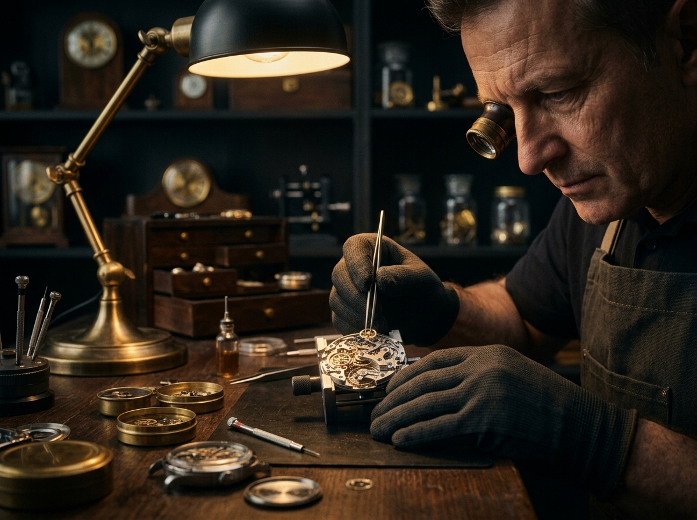

Nuestra Historia
El Arte de Dominar el Tiempo
Fundada con la visión de fusionar la tradición relojera artesanal con la resistencia del deporte de alto rendimiento, Kronos nació para aquellos que ven el tiempo no solo como una medida, sino como una declaración de vida.
Cada una de nuestras piezas es ensamblada minuciosamente utilizando materiales de vanguardia como titanio de grado aeronáutico, cristal de zafiro irrayable y movimientos mecánicos de alta precisión. No solo creamos relojes; construimos instrumentos de elegancia y durabilidad.
100%
Alta Precisión2 Años
Garantía Oficial+10k
Clientes Elites
Preguntas Frecuentes
Todo lo que necesitas saber sobre nuestras piezas y servicios.
Sí. Cada reloj Kronos se entrega en su estuche oficial junto con una tarjeta de garantía
internacional y un certificado numerado de autenticidad emitido por nuestros maestros
relojeros.
Nuestra garantía de 2 años cubre cualquier defecto de fabricación en el movimiento, las
manecillas y la caja. Contamos con centros de servicio autorizado para realizar el
mantenimiento necesario.
Realizamos envíos asegurados a nivel nacional. El tiempo estimado de entrega expres es
de 2 a 4 días hábiles desde la confirmación de la compra.
Todos nuestros modelos cuentan con hermeticidad garantizada. La línea deportiva *Abyss
Diver* resiste profundidades de hasta 200 metros (20 ATM), mientras que las colecciones
*Heritage* tienen resistencia de 50 metros (5 ATM).